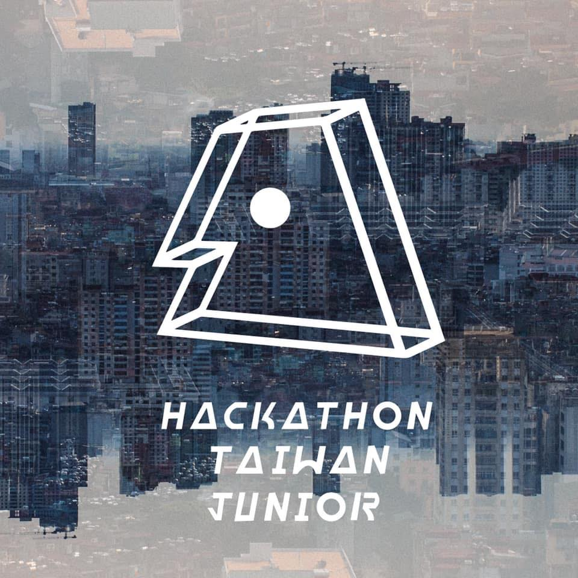

Work
TopScore Education Inc., Taiwan
Full-stack Web Developer, ML Bootcamp Instructor
Currently developing a content management system (in React & Redux) for educational consultants to manage student database, e.g. to handle students’ class info and consultant appointments. This CMS transformed company’s document management from entirely manual work to 100% digital process.
Instructor for front-end web dev (covered HTML, CSS, JavaScript, responsive web design), and machine learning fundamentals (covered logistic regression, neural net, CNN, RNN, basic hyperparameter-tuning) workshops.
KSI Inc. (subsidiary of Sinon Corporation), Taiwan
Summer Research Intern, Agricultural Blockchain Research Team
Conducted research on technical development of blockchain applications, IOTA, and its impact on the agricultural industry.
Devised technical execution plan for company spinoff blockchain project utilizing Angular.js and Ethereum.
Community
Fintech at Berkeley, UC Berkeley
Chair of Cryptocurrency Committee
Participated in the founding and initial recruiting of Fintech at Berkeley, the first fintech club founded at UC Berkeley. Led team to explore both financial and coding aspect of new cryptocurrency through projects, using tools like Node.js, Solidity, and Truffle suite.
Hackathon Taiwan Jr., Taiwan
Senior Consultant (Feb.2018 – Mar.2019)

Assisted successive leadership members on execution planning, formulating financial statement, and technical issues.
President (Feb.2017 – Jan.2018), Founder (Dec.2015 – Jan.2017)
Founded the first and only high school hackathon in Taiwan. Led team of 45. Attained 1000+ cumulative registrations in 3 years. $32, 000 USD sponsorships form Microsoft, Quanta Computer and more in 2017. Partnered with Make School to host Summer Academy(officially invited by founder) in Taiwan. Local Host of Major League Hacking.
IGEM (Team Mingdao), Boston
Gold Medalist, Team Leader, Technical Lead
International Genetically Engineered Machine Competition(iGEM) is a synthetic biology competition hosted by Massachusetts Institute of Technology. In 2017, I led our team to win gold medal,conducted and designed gene-cloning experiment, built project websites (with Bootstrap), and mathematic modeling for experiment with Excel VBA. In 2018, served as a lab advisor.